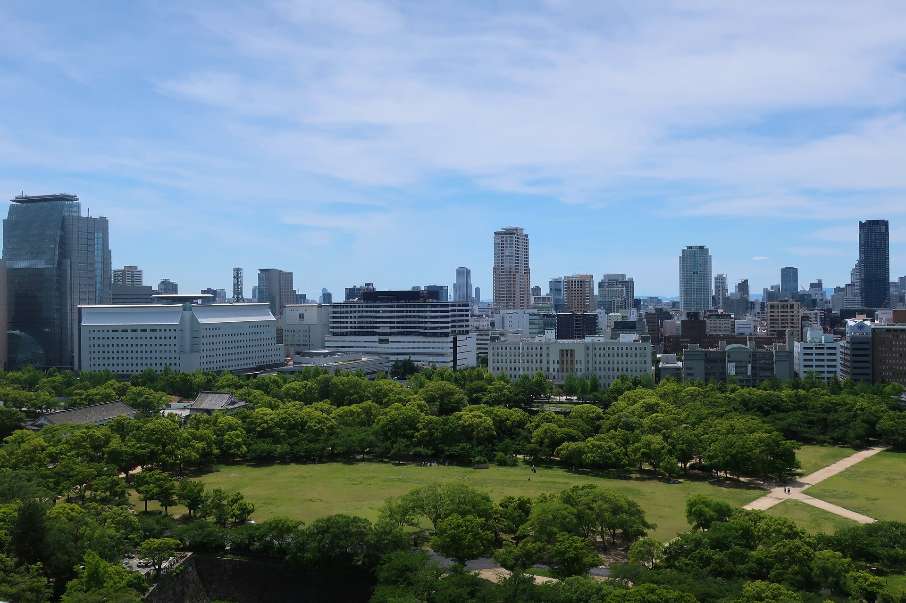

難波宮跡公園（なにわのみやあと公園）
飛鳥～奈良時代にかけて、大阪が日本の都であったことを示す前後期の宮殿の跡。

大阪市中央区法円坂の一帯に広がっている史跡公園。昭和36年（1961）、大阪市立大学教授の山根徳太郎博士の発掘調査により、飛鳥から奈良時代にかけて前後2期の難波宮跡が確認された。現在では、宮殿の中心部とされる約9万平方メートル余りの範囲が国の史跡に指定され、史跡公園として整備がすすめられている。史跡は2種類の方法で示されていて、地表面より一段高くして、石造りで基壇を示すものが神亀3年（726）から造営された後期難波宮、一段低くして赤いタイルを敷き、赤い御影石で柱位置を示し、サザンカの生け垣をめぐらせているものが「大化改新」による難波遷都の後、白雉（びゃくち）元年（650）から造営が始められた難波長柄豊碕宮（なにわながらとよさきのみや）＝前期難波宮となっている。また、公園の中央北寄りには、天皇が国家の公式行事をおこなう際に使用したとされる大極殿も復元されており、その上からは大阪城を眺望することができる。
住所
〒 540-0006 大阪市中央区法円坂１
アクセス
Osaka Metro谷町線｢谷町四丁目｣駅すぐ、JR大阪環状線｢森ノ宮｣駅より徒歩5分
電話番号
06-6943-6836（難波宮調査事務所）